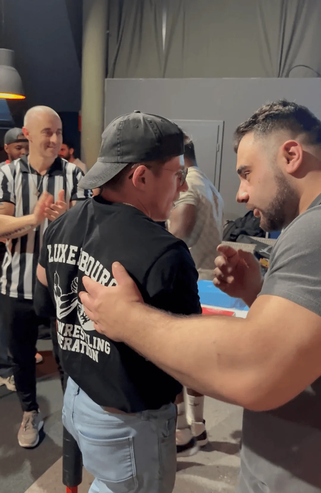

Catégories de poids, alimentation pour la force, couper ou monter avant une compétition — la nutrition est le facteur le plus sous-estimé de la progression en bras de fer.
Le bras de fer est un sport de force explosive. Un match dure entre 3 et 15 secondes, mais la préparation physique et nutritionnelle qui précède ce moment détermine en grande partie ce qui se passe sur la table.
En bras de fer, la nutrition agit à plusieurs niveaux : la composition corporelle (être dans la bonne catégorie), la qualité du muscle, la récupération entre les entraînements, et la performance le jour J.
Contrairement à l'endurance, le bras de fer ne brûle pas de calories en compétition. Mais la qualité du tissu musculaire — directement liée à la nutrition — détermine la force maximale que vous pouvez exprimer.

Les compétitions officielles sont organisées par catégories de poids, selon les règles de la WAF (World Armwrestling Federation).
| Catégorie | Profil typique |
|---|---|
| – 60 KG | Morphologie légère, technique souvent très fine |
| – 65 KG | Rapport force/poids optimal pour le top roll |
| – 70 KG | Catégorie très compétitive au niveau européen |
| – 75 KG | Mixte technique/force, profil polyvalent |
| – 80 KG | Force de prise très importante |
| – 85 KG | Début des catégories lourdes |
| – 90 KG | Force brute et masse musculaire dominante |
| – 100 KG | Athlètes de force avancés |
| – 110 KG | Très forte puissance de bras et d'épaule |
| + 110 KG | Force maximale, matchs explosifs |
Conseil stratégique : plutôt que de couper drastiquement, beaucoup d'athlètes préfèrent s'entraîner naturellement près du bas d'une catégorie. Être le plus lourd dans sa catégorie est souvent un avantage — mais pas au prix d'une coupe épuisante.
Pour un athlète de bras de fer qui s'entraîne 2 à 3 fois par semaine, voici les repères nutritionnels indicatifs pour 1 kg de poids corporel :
Le bras de fer sollicite intensément les tendons du coude, du poignet et de l'épaule. Ces structures sont les premières à s'abîmer si la nutrition ne soutient pas leur régénération :
Le rayon compléments est rempli de promesses. Pour un sport de force explosive comme le bras de fer, trois sortent du lot scientifiquement :
Tout le reste — BCAA isolés, pré-workouts exotiques, « testo boosters » — est au mieux superflu si l'alimentation de base et le sommeil ne sont pas réglés. Commencez par les fondamentaux.
La nutrition de force ne relève pas du folklore de salle. Voici ce que montre la littérature scientifique récente sur les sports de force et les sports à catégories de poids — et comment elle oriente les recommandations de ce guide.
Une méta-analyse de 49 études (1 863 participants) a montré que la supplémentation en protéines augmente significativement la force et la masse maigre développées par la musculation, mais que ces gains plafonnent autour de 1,6 g/kg/jour d'apport total [2]. La prise de position de l'International Society of Sports Nutrition recommande 1,4 à 2,0 g/kg/jour pour développer ou maintenir le muscle, répartis en doses de 20–40 g toutes les 3 à 4 h [1]. La fourchette de 1,8–2,2 g/kg retenue ici place l'athlète de bras de fer juste au-dessus du seuil utile, avec une marge pour les phases de coupe.
En période de restriction calorique, l'ISSN relève qu'un apport protéique plus élevé (2,3 à 3,1 g/kg/jour) protège la masse maigre [1]. Pour les sports à catégories de poids, une revue de référence recommande de privilégier une perte de masse grasse progressive plutôt qu'une déshydratation aiguë, et de réserver toute coupe de dernière minute aux athlètes disposant d'un temps de récupération suffisant entre la pesée et les matchs [3]. C'est exactement la logique de la règle « jamais plus de 5 % » et des 12 h de récupération défendue dans ce guide.
À retenir : viser environ 1,6 à 2,2 g/kg de protéines réparties sur la journée, et gérer le poids par la composition corporelle sur plusieurs semaines plutôt que par une coupe brutale de dernière minute.
Monter en catégorie signifie augmenter sa masse musculaire pour être compétitif dans une catégorie supérieure. La stratégie : surplus calorique modéré (+200 à +400 kcal/jour) combiné à un programme de renforcement progressif. Un gain de 0,5 à 1 kg de muscle par mois est réaliste et durable.
Règle d'or : ne jamais couper plus de 5% de votre poids corporel, et toujours prévoir au minimum 12h de récupération entre la pesée et vos premiers matchs.
Un repas 2–3h avant la séance : glucides complexes + protéines modérées + peu de lipides. Exemple : riz + poulet + légumes.
La fenêtre post-entraînement est importante : protéines + glucides dans les 30–60 min suivant la séance. Objectif : stopper le catabolisme et démarrer la synthèse musculaire.
Les tendons, cartilages et disques intervertébraux sont composés à 70–80% d'eau. Une hydratation insuffisante augmente directement le risque de blessure. Objectif : 2,5 à 3,5 litres d'eau par jour les jours d'entraînement.
Tous ces repères ne valent que si vous vous entraînez vraiment. Technique, force, prévention des blessures : on vous accompagne à chaque étape. Première séance gratuite.
Pour aller plus loin sur la prévention des blessures, consultez notre guide sur les blessures au bras de fer.
Collagène, vitamine C, oméga-3 et charge progressive — la nutrition qui protège les tendons, preuves à l'appui.
Lire l'article →Pesée, gestion du poids et nutrition du jour J — organiser sa semaine de compétition sans casser sa force.
Lire l'article →Le travail de force que la nutrition vient soutenir : 10 exercices ciblés pour la prise et l'avant-bras.
Voir le programme →